7. Managing concurrent access to data
So far, we have used tables of which we were the sole users. In practice, on a multi-user machine, data is most often shared among different users. This raises the question: Who can use a given table and in what capacity (query, insert, delete, append, ...)?
7.1. Creating Firebird Users
When we worked with IB-Expert, we logged in as the SYSDBA user. This information can be found in the properties of the open connection to the DBMS:
 |  |
On the right, we see that the logged-in user is [SYSDBA]. What we don’t see is their password [masterkey]. [SYSDBA] is a special Firebird user: they have full privileges over all objects managed by the DBMS. You can create new users in IBExpert using the [Tools / User Manager] option or the following icon:

This opens the user management window:

The [Add] button allows you to create new users:

Let’s create the following users:
username | password |
ADMIN1 | admin1 |
ADMIN2 | admin2 |
SELECT1 | select1 |
SELECT2 | select2 |
UPDATE1 | update1 |
UPDATE2 | update2 |
7.2. Granting Access Rights to Users
A database belongs to the user who created it. The databases we have created so far belonged to the user [SYSDBA]. To illustrate the concept of permissions, let’s create (Database / Create Database) a new database under the identity [ADMIN1, admin1]:

and register it with the alias DBACCES (ADMIN1). Using aliases allows you to open connections to the same database with different usernames, making them easier to identify in the IBExpert database explorer. :
 | 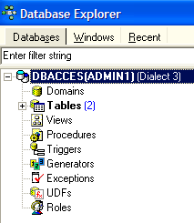 |
Now let’s create the following two tables, TA and TB:
Table TA
 |
Table TB
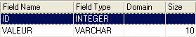 |  |
These tables are not related to each other.
Using IB-Expert, let’s create a second connection to the [DBACCES] database, this time under the name [ADMIN2 / admin2]. To do this, we’ll use the [Database / Register Database] option:
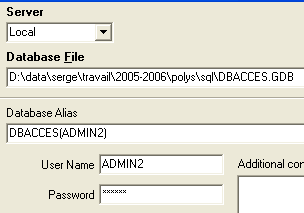 |  |
Select DBACCES(ADMIN2) and open an SQL editor (Shift + F12):
 |
We will have the opportunity to use various connections to the same database [DBACCES]. For each of them, we will have an SQL editor. In [1], the SQL editor displays the alias of the connected database. Use this information to determine which SQL editor you are in. This is important because we will create connections that do not have the same access rights to the database objects.
Let’s query the contents of the TA table:

We receive the following error message:

What does this mean? The [DBACCESS] database was created by the user [ADMIN1] and is therefore owned by them. Only they have access to the various objects in this database. They can grant access rights to other users using the SQL GRANT command. This command has various syntaxes. One of them is as follows:
GRANT privilege1, privilege2, ...| ALL PRIVILEGES ON table/view TO user1, user2, ...| PUBLIC [ WITH GRANT OPTION ] | |
grants specific access privileges or all privileges (ALL PRIVILEGES) on the table or view to a specific user or to all users (PUBLIC). The WITH GRANT OPTION clause allows users who have been granted privileges to grant them to other users in turn. |
Among the privileges that can be granted are the following:
the right to use the DELETE command on the table or view. | |
the right to use the INSERT command on the table or view | |
Permission to use the SELECT command on the table or view | |
permission to use the UPDATE command on the table or view. This permission can be restricted to certain columns using the syntax: GRANT update (col1, col2, ...) ON table/view TO user1, user2, ...| PUBLIC [WITH GRANT OPTION] |
Let’s grant user [ADMIN2] SELECT permission on table TA. Only the table owner can grant this permission, i.e., [ADMIN1] in this case. Switch to the DBACCES(ADMIN1) connection and open a new SQL editor (Shift+F12):

From here on, we will switch between the two SQL editors. To navigate between them, you can use the [Windows] menu option:

Above, we see the two SQL editors, each associated with a specific user. Let’s return to the SQL editor (ADMIN1) and enter the following command:

Then confirm it with a COMMIT:

Now, let’s switch to the ADMIN2 user’s editor to rerun the SELECT statement that failed:
We get the following error message:
The user [ADMIN2] still does not have permission to view the [TA] table. In fact, it appears that a user’s permissions are loaded when they log in. [ADMIN2] would therefore still have the same permissions as when they first logged in, i.e., none. Let’s verify this. Log out the user [ADMIN2]:
- select their connection
- request the logout by right-clicking on the connection and selecting the [Disconnect from database] option or (Shift + Ctrl + D)

If a dialog box prompts for a [COMMIT], perform the [COMMIT]. Then reconnect user [ADMIN2] by selecting the [Reconnect] option above. Once this is done, return to the SQL editor (ADMIN2) and re-run the SELECT query that failed:
We then get the following result:

This time, ADMIN2 can view the TA table thanks to the SELECT privilege granted by its owner, ADMIN1. Normally, this is the only privilege they have. Let’s verify this. Still in the SQL editor (ADMIN2):
 |  |
The screen on the right shows that ADMIN2 does not have DELETE permission on the TA table.
Let’s return to the SQL editor (ADMIN1) to grant additional rights to user ADMIN2. We execute the following two commands in succession:
 |  |
- The first command grants user ADMIN2 full access rights to the [TA] table, along with the ability to grant rights to others (WITH GRANT OPTION)
- The second command validates the previous one
Once this is done, as before, let’s refresh the [ADMIN2] user’s connection (Disconnect / Reconnect), then in the SQL editor (ADMIN2) enter the following commands:
 |  |  |
ADMIN2 was able to delete all rows from the TA table. Let’s undo this deletion with a ROLLBACK:
 | |  |
Let’s verify that ADMIN2 can in turn grant permissions on the TA table.
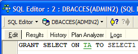 |  |
Now let’s open a connection to the [DBACCES] database (Database / Register database) under the name [SELECT1 / select1], one of the users created earlier, then double-click on the link created in [Database Explorer]:
 | 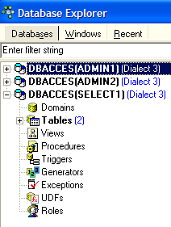 |
Switch to this new connection and open a new SQL editor (Shift + F12) to enter the following commands:
 |  |
The SELECT1 user does indeed have SELECT rights on the TA table. Can they transfer this right to the SELECT2 user?
 |
The operation failed because user SELECT1 did not receive the right to grant the SELECT privilege they received from user ADMIN2. For this to happen, user ADMIN2 would have had to use the WITH GRANT OPTION clause in their SQL GRANT statement. The rules for granting privileges are simple:
- a user can only grant the privileges they have received and nothing more
- and they can only pass them on if they received them with the [WITH GRANT OPTION] privilege
A granted privilege can be revoked using the REVOKE statement:
REVOKE privilege1, privilege2, ...| ALL PRIVILEGES ON table/view FROM user1, user2, ...| PUBLIC | |
revokes access privileges (privilege1) or all privileges (ALL PRIVILEGES) on the table or view from users (user1, user2, ...) or all users (PUBLIC). |
Let’s try it. Return to the ADMIN2 SQL editor to remove the SELECT privilege we granted to user SELECT1:
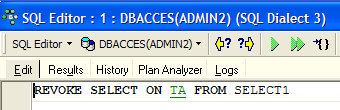 |  |
Let’s disconnect and then reconnect the SELECT1 user’s session. Then, in the SQL editor (SELECT1), let’s query the contents of the TA table:
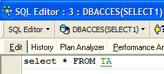 |  |
The user SELECT1 has indeed lost their SELECT privilege on the TA table. Note that it was ADMIN2 who granted this privilege and it was ADMIN2 who revoked it. If ADMIN1 attempts to revoke it, no error is reported, but we can then see that SELECT1 has retained their SELECT privilege.
A privilege can be granted to everyone using the syntax: GRANT privilege(s) ON table / view TO PUBLIC. Let’s grant the SELECT privilege on the TA table to everyone. We can use either ADMIN1 or ADMIN2 to do this. We’ll use ADMIN2:
 |  |
Let’s create a connection to the database using the user USER1 / user1:
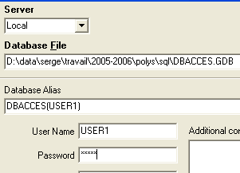 |  |
With the DBACCES(USER1) connection, open a new SQL editor (Shift + F12) and enter the following commands:
 |  |
The user USER1 does indeed have SELECT permission on the TA table.
7.3. Transactions
7.3.1. Isolation levels
We will now move on from the issue of access rights to database objects to address that of concurrent access to these objects. Two users with sufficient access rights to a database object—a table, for example—want to use it at the same time. What happens?
Each user works within a transaction. A transaction is a sequence of SQL statements that is executed "atomically":
- either all operations succeed
- or one of them fails, in which case all preceding ones are rolled back
Ultimately, the operations in a transaction are either all successfully applied or none are applied. When the user has control over the transaction (as is the case throughout this document), they commit a transaction with a COMMIT statement or roll it back with a ROLLBACK statement.
Each user works within a transaction that belongs to them. There are typically four levels of isolation between different users:
- Uncommitted Read
- Committed Read
- Repeatable Read
- Serializable
Uncommitted Read
This isolation level is also known as "Dirty Read." Here is an example of what can happen in this mode:
- User U1 starts a transaction on table T
- User U2 starts a transaction on the same table T
- User U1 modifies rows in table T but has not yet committed them
- User U2 "sees" these changes and makes decisions based on what they see
- The user rolls back their transaction using a ROLLBACK
We can see that in step 4, user U2 made a decision based on data that will later turn out to be incorrect.
Committed Read
This isolation level avoids the previous pitfall. In this mode, user U2 in step 4 will not "see" the changes made by user U1 to table T. They will only see them after U1 has committed their transaction.
In this mode, also known as "Unrepeatable Read," the following situations may occur:
- a user U1 starts a transaction on a table T
- User U2 starts a transaction on the same table T
- User U2 performs a SELECT to obtain the average of column C from the rows of T that meet a certain condition
- User U1 modifies (UPDATE) certain values in column C of T and commits (COMMIT) the changes
- User U2 repeats the same SELECT as in step 3. They will find that the average of column C has changed due to the modifications made by U1.
Now user U2 sees only the changes "committed" by U1. But while remaining in the same transaction, two identical operations (steps 3 and 5) yield different results. The term "Unrepeatable Read" refers to this situation. This is a problematic situation for someone who wants a consistent view of table T.
Repeatable Read
In this isolation level, a user is guaranteed to get the same results from their database reads as long as they remain within the same transaction. They work on a snapshot that never reflects changes made by other transactions, even if those changes have been committed. They will only see those changes once they themselves end their transaction with a COMMIT or ROLLBACK.
However, this isolation level is not yet perfect. After operation 3 above, the rows queried by user U2 are locked. During operation 4, user U1 will not be able to modify (UPDATE) the values in column C of these rows. However, they can add new rows (INSERT). If some of the added rows satisfy the condition tested in 3, operation 5 will yield a different average than the one found in 3 due to the added rows.
To resolve this new issue, you must switch to "Serializable" isolation.
Serializable
In this isolation mode, transactions are completely isolated from one another. It ensures that the result of two transactions performed simultaneously will be the same as if they were performed one after the other. To achieve this result, during operation 4, when user U1 attempts to add rows that would change the result of user U1’s SELECT, they will be prevented from doing so. An error message will inform them that the insertion is not possible. It will become possible once user U2 has committed their transaction.
The four SQL transaction isolation levels are not available in all DBMSs. Firebird provides the following isolation levels:
- snapshot: default isolation mode. Corresponds to the "Repeatable Read" mode of the SQL standard.
- committed read: corresponds to the "committed read" mode of the SQL standard
This isolation level is set by the SET TRANSACTION command:
SET TRANSACTION [READ WRITE | READ ONLY] [WAIT|NOWAIT] ISOLATION LEVEL [SNAPSHOT | READ COMMITTED] | |
Underlined keywords are the default values READ WRITE: The transaction can read and write READ ONLY: The transaction can only read WAIT: In the event of a conflict between two transactions, the one that was unable to complete its operation waits until the other transaction is committed. It can no longer issue SQL statements. NOWAIT: The transaction that was unable to complete its operation is not blocked. It receives an error message and can continue working. ISOLATION LEVEL [SNAPSHOT | READ COMMITTED]: isolation level |
Let’s try it. In the SQL editor (ADMIN1), enter the following SQL command:

We see that it was not authorized. We don’t know why...
IB-Expert allows you to set the isolation mode in another way. Right-click on the DBACCES(ADMIN1) connection to select the [Database Registration Info] option:
 |  |
The screen on the right shows a [Transactions] option. This will allow us to set the transaction isolation level. Here, we set it to [snapshot]. We do the same with the DBACCES(ADMIN2) connection.
7.3.2. Snapshot mode
Let’s examine the snapshot isolation level, which is Firebird’s default isolation mode. When a user starts a transaction, a snapshot of the database is taken. The user then works on this snapshot. Each user thus works on their own snapshot of the database. If they make changes to it, other users do not see them. They will only see them once the user who made the changes has committed them with a COMMIT.
There are two possible scenarios:
- one user reads the table (SELECT) while another is modifying it (INSERT, UPDATE, DELETE)
- Both users want to modify the table at the same time
7.3.2.1. Principle of consistent reading
Consider two users, U1 and U2, working on the same table TAB:
User U1’s transaction begins at time T1a and ends at time T1b.
User U2's transaction begins at time T2a and ends at time T2b.
U1 works on a snapshot of TAB taken at time T1a. Between T1a and T1b, they modify TAB. Other users will not have access to these modifications until time T1b, when U1 performs a COMMIT.
U2 works on a snapshot of TAB taken at time T2a, which is the same snapshot used by U1 (provided no other users have modified the original in the meantime). He does not "see" the changes that user U1 may have made to TAB. He will only be able to see them at time T1b.
Let’s illustrate this point using our [DBACCES] database. We will have the two users [ADMIN1] and [ADMIN2] working simultaneously. Let’s switch to the DBACCES(ADMIN1) connection and, in ADMIN1’s SQL editor, perform the following operations:
 |  | 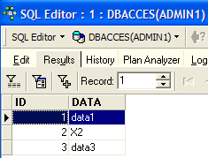 |
ADMIN1 has modified row 2 of table TA but has not yet committed (COMMIT) the operation. User ADMIN2 then performs a SELECT on table TA (we switch to ADMIN2’s SQL editor). We are before time T2a in the example.
 | 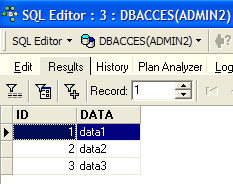 |
Back in ADMIN1’s SQL editor, which commits the update:
 |
Back in ADMIN2’s SQL editor to rerun the SELECT:
|  |
ADMIN2 sees the changes made by ADMIN1. In snapshot mode, a transaction does not see changes made by other transactions until those transactions are complete.
7.3.2.2. Simultaneous modification of the same database object by two transactions
Let’s take an example from accounting: U1 and U2 are working on accounts. U1 debits accountX by an amount S and credits accountY by the same amount. He will do this in several steps:
U1 starts a transaction at time T1a, debits comptex at time T1b, credits comptey at time T1c, and commits both operations at time T1d. Suppose, furthermore, that U2 wants to do the same thing, starts their transaction at time T2a, and ends it at time T2d according to the following scheme:
--------+----------+----+----+-------+------+-----+-------+---------
T1a T1b T2a T1c T2b T1d T2c T2d
At time T2, a snapshot of the account table is taken for U2. It is consistent according to the snapshot principle. U2 sees the initial state of the comptex and comptey accounts because U1 has not yet committed its transactions.
Suppose that comptex has an initial balance of €1,000 and that both users U1 and U2 want to debit it by €100.
- At time T1b, U1 debits comptex by €100, bringing it to €90. This transaction will not be committed until time T1d.
- At time T2b, U2 sees comptex with €1,000 (consistent read principle) and decrements it by €100, bringing it to €90.
- Ultimately, at time T2d, when everything has been validated, comptex will have a balance of €90 instead of the expected €80.
The solution to this problem is to prevent U2 from modifying comptex until U1 has completed its transaction. U2 will thus be blocked until time T1d. Snapshot mode provides this mechanism.
Let’s illustrate this using the DBACCES database. ADMIN1 starts a transaction in their SQL editor (ADMIN1):
 |  |  |  |
We started by issuing a COMMIT to ensure we were starting a new transaction. Then we deleted line 4. The transaction has not yet been committed.
ADMIN2 then starts a transaction in his SQL editor (ADMIN2):
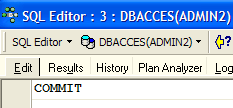 |  |
The screen on the right shows that ADMIN2 attempted to modify line 4. They were informed that this was not possible because someone else had already modified it but had not yet committed the change.
Let's go back to the SQL editor (ADMIN1) to execute the COMMIT:

Let's go back to the SQL editor (ADMIN2) to run the UPDATE command again:
 |  |
 | 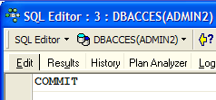 |
The UPDATE operation completes successfully even though row #4 no longer exists, as shown by the following SELECT statement. It is at this point that ADMIN2 discovers that the row no longer exists.
7.3.2.3. Repeatable Read Mode
Let’s now illustrate “Repeatable Read” mode. This isolation level is provided by “snapshot” mode. It ensures that a transaction always obtains the same result when reading the database.
Let’s start by working with ADMIN2’s SQL editor:
 |  |  |
 | 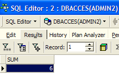 |
Now let’s switch to ADMIN1’s SQL editor:
 |  |  |
 |  |  |
 |  |
User ADMIN1 added two rows and committed the transaction. Let’s now return to the SQL editor (ADMIN2) to re-run the SELECT SUM:
 |  |
We can see that ADMIN2 does not see the rows added by ADMIN1, even though they were committed with a COMMIT. The SELECT SUM returns the same result as before the additions. This is the principle of Repeatable Read.
Now, still in the SQL editor (ADMIN2), let’s commit the transaction with a COMMIT and then run the SELECT SUM again:
 |  | 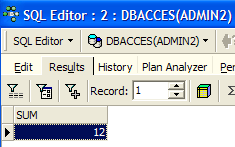 |
The rows added by ADMIN1 are now taken into account.
7.3.3. Committed Read mode
Let’s now illustrate “Committed Read” mode. This isolation level is similar to that of a snapshot, except with regard to “Repeatable Read.”
We start by changing the transaction isolation level for both connections.
- We disconnect the two users, ADMIN1 and ADMIN2
- We change the isolation level of their transactions
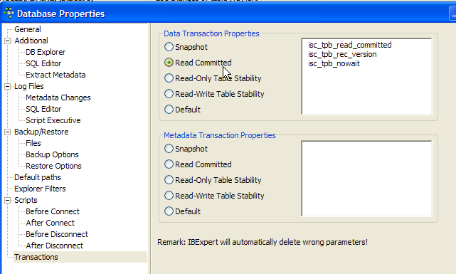
- We reconnect the users ADMIN1 and ADMIN2
We will now revisit the previous example that illustrated "Repeatable Read" to show that we no longer see the same behavior. Let’s start by working with ADMIN2’s SQL editor:
| | |
|
Now let’s switch to ADMIN1’s SQL editor:
| | |
| | |
| |
User ADMIN1 has added two rows and committed their transaction. Let’s now return to the SQL editor (ADMIN2) to re-run the SELECT SUM:
|  |
The SELECT SUM does not return the same result as before the additions made by ADMIN1. This is the difference between snapshot and read committed modes.